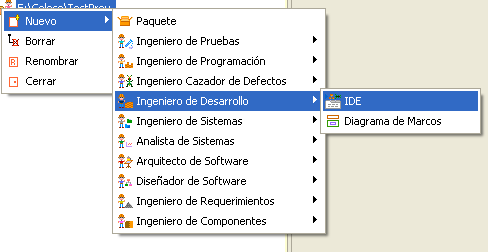
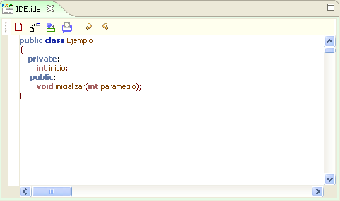
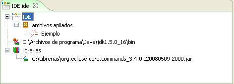
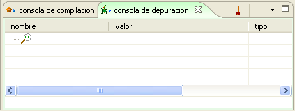

|
Framework IDE |
|
Integra las herramientas de editor, compilador y depurador. El editor permite resaltar las palabras claves facilitando la escritura del código. Por otra parte, el compilador es la facilidad para compilar un programa y ejecutarlo sin necesidad de recurrir a líneas de comandos. El depurador de IDE provee facilidad para realizar un seguimiento de los programas haciendo clic sobre botones que se hacen transparentes y a las sentencias necesarias de realizar la ejecución paso a paso de un programa.  Figura 1. Acceso al Framework IDE IDE posee un editor de código fuente que permite resaltar la sintaxis, en este caso para Java, que es el motor predeterminado con el que trabaja.  Figura 2. Sintaxis resaltada estilo Java en IDE El marco de especificación por su parte contiene las librerías y el motor de compilación usado en el momento.  FIgura 3. Manejo de entornos y librerías en IDE Por ultimo el marco de extensión posee una consola de depuración y una consola de compilación que realizan las mismas funciones que un entorno de desarrollo convencional, pero con las características de simplicidad y elegancia ofrecidas por Coloso.  Figura 4. Consola de depuración y compilación asociada al IDE El framework IDE se conecta dentro del ambiente AIA en el marco de expresión de desarrollo ingenieril, además utiliza como marcos de extensión una perspectiva de consola de compilación en la que aparecen los mensajes de error en compilación, los mensajes de ejecución de un programa y una consola de depuración en donde aparecen el estado de las variables del programa en ejecución. También, se utiliza un marco de extensión de presentación en forma jerárquica a través de un árbol que despliega el archivo que se va creando.
|